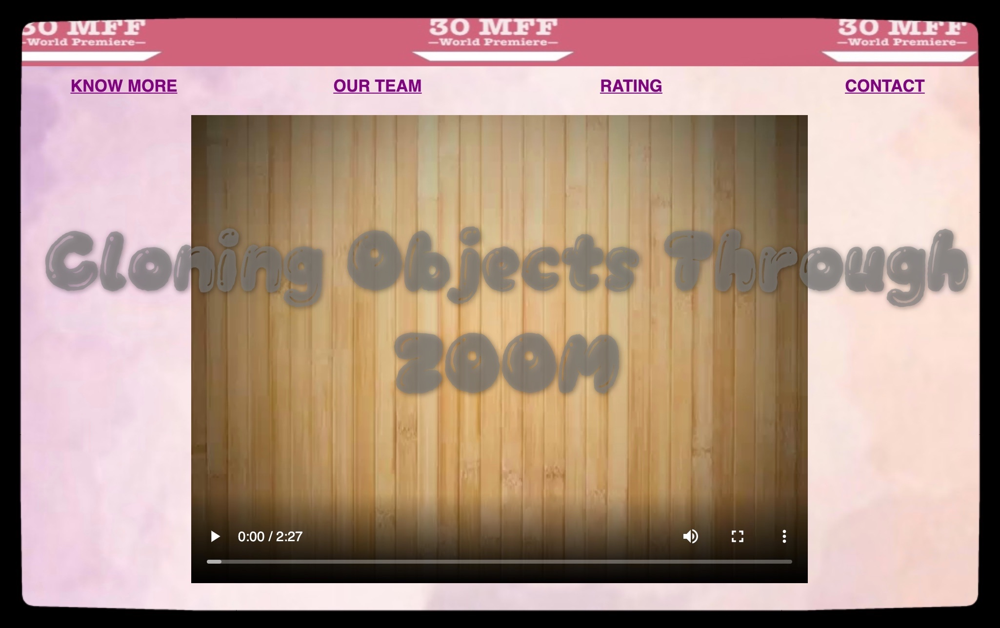

This is the first assignment, where my teammates and I filmed and edited a short film, and we each individually coded a webpage to display it. It is my first web design work. It is not that refined and aesthetically appealing, but very meaningful to me. Hope you like it :>
For the second assignment, we were given a lot freedom to create our own storyline and a six-panel "interactive" comic. My team came up with an emotional story about a bear giving away free hugs to his peers. We hope whoever interact with it can have an immersive experience and escape from the annoying Covid thing for a few minutes.
In this project, my team mainly wanted to auditorily present things that we cherished . For Yoki, it’s travelling; for Treedom, it’s photography; for Quim, it’s playing the guitar; and for Nadja, it’s dancing. These things are the sources of happiness and energy to us, so recording the sound related to these things works as a recollection and reminisce. We wanted to create a sense of antiquity, echoing the theme of “memory”. When you hover over to listen to the story, the picture will turn into a colored one, resembling the revitalization of the past memory.
This project is a video based project that houses 4 stories running on the premise that it is December 2020, and that the time machine has been invented. 4 people go to the pre-pandemic past to warn their past selves about the disastrous year that is about to follow. The project has 4 parallel stories that are running and each story was created by each team member. Each team member was the main actor in their own videos and had diverse character traits. We had 4 characters, the rich kid, the paranoid kid, the YOLO kid and the bat killer kid. Thus, we see each individual go to their past and warn their past selves about the pandemic and see how each character responds in a different manner. We wanted to create an interactive experience for the user and this was achieved by the way the website displayed the stories.